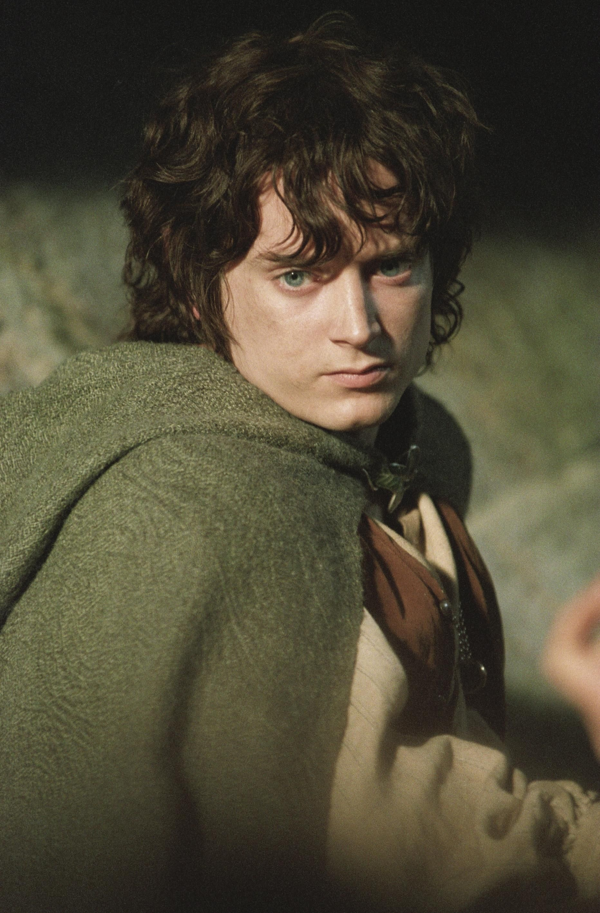

Хобит
Фродо Бегинс
Фродо Бегинс е скромен хобит от Шайра, който по неволя става носител на Единствения пръстен. Въпреки страховете и съмненията си, той поема тежката задача да отнесе Пръстена до Мордор, за да бъде унищожен.
Основни моменти:
- Наследява Пръстена от чичо си Билбо
- Преминава през Мория и Лотлориен
- Ранен от назгул на Амон Хен
- Достига до Ородруин със Сам
"Аз ще го поема Пръстена, макар че не знам пътя."